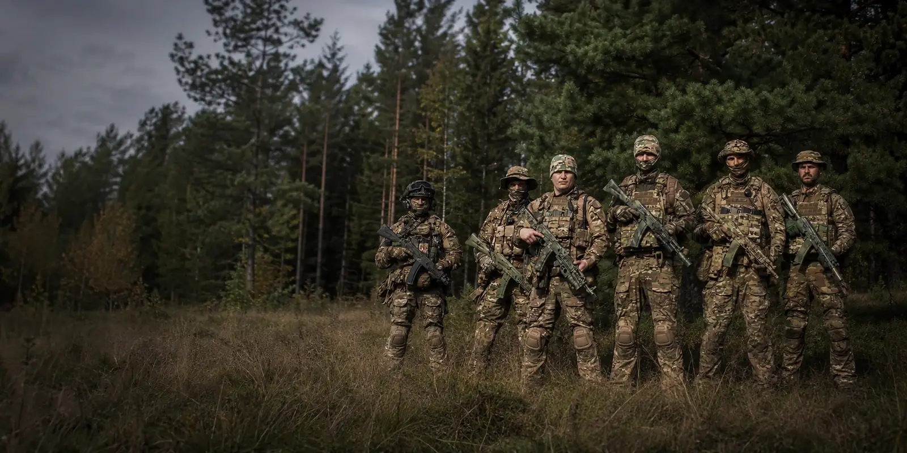

До эпизода
Собраться
Проверить связь, снаряжение и общее понимание задачи.

Не строй, не одинаковые комплекты и не одинаковый опыт. Команда начинается там, где люди умеют действовать рядом и отвечать за свою часть общей работы.

Кто-то приходит с готовым комплектом и игровым опытом, кто-то начинает почти с нуля. На поле разница быстро становится вторичной: важнее видеть соседей, слышать связь и понимать, что происходит вокруг.
Поэтому внешний вид для нас не заменяет командную работу. Снаряжение должно помогать, а не играть главную роль.
Проверить связь, снаряжение и общее понимание задачи.

Держать общий темп и не выпадать из группы, когда обстановка меняется.

Отделить удачный эпизод от устойчивого навыка и понять, что улучшать.

В опубликованных материалах команды чаще всего встречаются лесные полигоны: плотная зелень, просеки, грунт, корни и короткие дистанции между укрытиями.
Такая среда быстро показывает, насколько удобно собрано снаряжение и насколько группа умеет двигаться без лишнего шума и суеты.
Ниже — не внутренний устав, а базовые вещи, без которых совместная игра просто разваливается.
Передавать нужную информацию вовремя, слышать соседей и не превращать эфир в постоянный шум.
Проверить очки, привод, магазины, питание, воду и связь до выхода, а не в тот момент, когда всё уже понадобилось.
Если на человека рассчитывают в группе, его готовность и решения влияют не только на него самого.

Новичку полезнее сначала понять ритм команды, задать вопросы и приехать на подходящее мероприятие, чем заранее собирать комплект по чужим фотографиям.
Если опыт уже есть, достаточно коротко рассказать о нём и перечислить имеющееся снаряжение. Если опыта нет — это тоже нормальная отправная точка.
Маршрут новичка →Фотографии лучше текста показывают общий характер: природная палитра, используемое снаряжение, плотность группы и реальную игровую среду.


Если по фотографиям и подходу тебе близок такой формат, посмотри маршрут новичка и подготовь короткое обращение.